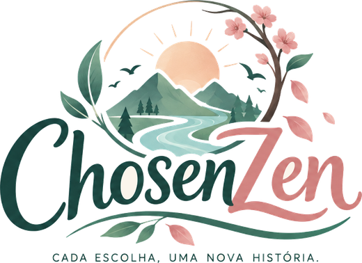
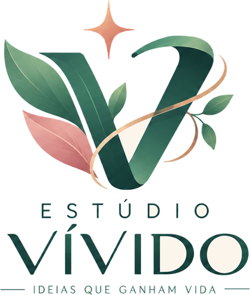
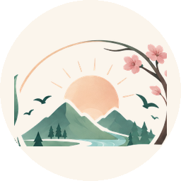

Sobre o jogo
Hoje, a professora encontrou uma cola embaixo da sua carteira. Não era sua, mas ninguém acreditou. Você chega em casa cansado, e tudo o que quer é chegar ao seu quarto.
ChosenZen é um simulador de vida sobre reputação e caráter. Em vez de menus e listas, você vive cada fase da vida andando por cenários desenhados em pixel art e conversando com as pessoas da sua vida.
Cada conversa custa Energia, e cada resposta muda como os outros veem você, a sua Reputação. Ser atencioso cansa; poupar energia pode magoar quem você ama. Não existe resposta certa, só escolhas com consequências. O que você conta, esconde ou decide hoje à noite define como vai ser amanhã.
Recursos
- Escolhas com custo real: Reputação e Energia puxam para lados opostos, e opções caras ficam bloqueadas quando você está exausto.
- Consequências que voltam: suas escolhas viram memórias que mudam as cenas seguintes e o desfecho do dia.
- Uma noite que passa de verdade: a luz, a música e os sons da casa mudam do fim de tarde até a madrugada.
- Movimento livre: ande pela casa, encontre as pessoas e descubra pequenos segredos, como o lanche na geladeira.
- Trilha e efeitos originais: música lo-fi criada para o jogo.
- Acessível: velocidade e tamanho do texto ajustáveis, volumes por canal, suporte a controle.
Imagens


Logos e ícone



Sobre o Estúdio Vívido
"Ideias que ganham vida." O Estúdio Vívido é um estúdio independente brasileiro formado durante o curso de Games da FIAP. ChosenZen é o primeiro jogo do estúdio.
Créditos
Desenvolvido pelo Estúdio Vívido. Música e efeitos sonoros originais. Fonte Quicksand (SIL Open Font License). Feito com Godot Engine (licença MIT).